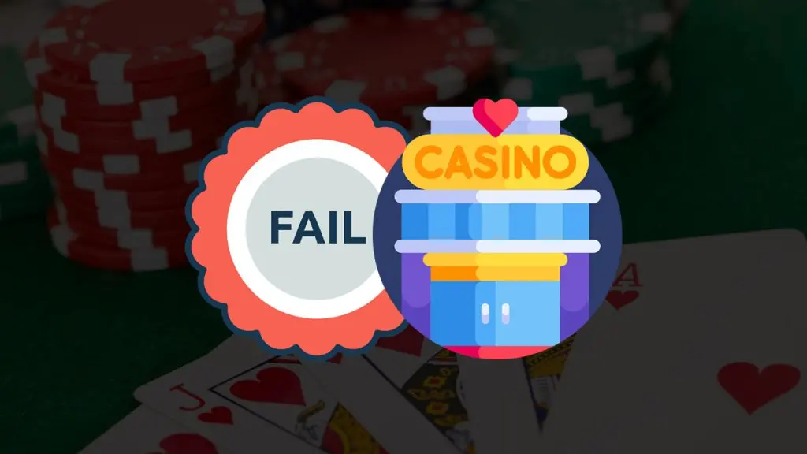

Das sind die 5 häufigsten Casino-Fehler von glücksspielanfängern
Jeden Tag betreten Menschen ein Casino, die noch nie zuvor in ihrem Leben dort waren. Sie sind im Begriff, ein einzigartiges Abenteuer zu erleben und haben natürlich die Chance, das Casino mit mehr Geld zu verlassen, als sie bei ihrer Ankunft in der Tasche hatten. Die Wahrscheinlichkeit, dass dies tatsächlich geschieht, wird jedoch dadurch verringert, dass Anfänger Casino-Fehler machen. Dabei handelt es sich oft um sehr offensichtliche Fehler, die sie hätten vermeiden können, wenn sie sich vorher ein wenig informiert hätten. In diesem Artikel lesen Sie daher über die häufigsten Fehler, die von Casino-Neulingen gemacht werden. Sie werden dann genau wissen, was Sie bei Ihrem ersten Casinobesuch vor allem tun und lassen sollten.
Sie spielen bei spielen mit einem sehr hohen hausvorteil
Casinos sind einfach Unternehmen, die einen Gewinn erzielen wollen. Das ist möglich, weil jedes Spiel, das Sie spielen können, einen Bankvorteil für das Casino hat. Das garantiert dem Casino auf lange Sicht Gewinne, obwohl die Spieler das Casino natürlich auch mit einem großen Gewinn verlassen können. Erfahrene Spieler wissen genau, welche Spiele den höchsten Hausvorteil haben, und werden diese immer meiden. Denn je höher der Bankvorteil ist, desto unwahrscheinlicher ist es, dass Sie mit dem Spiel auf Dauer Geld gewinnen können. Neulinge kennen den Hausvorteil nicht und machen den Casino-Fehler, einfach ein Spiel zu wählen, das ihnen gefällt. Damit ist eigentlich schon garantiert, dass sie ihr Spielgeld verlieren werden. Die Spiele mit den niedrigsten Hausvorteilen im Casino sind Video Poker, Blackjack und Baccarat. Spiele mit höheren Hausvorteilen sind Roulette, Craps und Spielautomaten.
Häufigster Casino-Fehler: Abheben von zusätzlichem Geld
Wenn Sie keine Casino-Fehler machen wollen, ziehen Sie einen bestimmten Betrag ab, wenn Sie im Casino spielen. Wenn das Geld ausgeht, ist das auch das Zeichen, nach Hause zu gehen. Neulinge machen oft den Fehler, kurzzeitig Geld von jedem Geldautomaten abzuheben, den man im Casino findet. Auf diese Weise verlieren die meisten Spieler einfach noch mehr, als sie ursprünglich vorhatten. Es ist nie eine gute Idee, mehr zu verlieren, als man sich vorgenommen hat, bevor man ins Casino geht.
BPlatzierung von wetten auf so genannte „suckerbets
Das liegt daran, dass es sich um Wettoptionen mit einem hohen Hausvorteil handelt. Der Gewinn, den Sie erzielen, wenn Sie richtig tippen, ist viel höher, nur die Gewinnchancen sind viel geringer als bei anderen (weniger riskanten) Wettoptionen. Diese Wettoptionen werden daher auch als „sucker bets“ bezeichnet. Anfänger setzen oft auf diese „Suckerbets“ und verlieren dadurch nicht nur mehr, als sie sollten, sondern haben auch schneller keine Bankroll mehr.
Alkoholkonsum ist ein teurer Casino-Fehler
Für viele Menschen gehört zu einem schönen Abend ein schönes Glas Wein oder Bier. Bei einem Casinobesuch ist dies jedoch nicht sehr klug. Alkohol bringt Sie dazu, beim Spielen Entscheidungen zu treffen, die Sie sonst vielleicht nicht getroffen hätten. Besonders wenn man viel Alkohol im Blut hat, können diese Entscheidungen dramatische Folgen haben. Es kommt zum Beispiel häufig vor, dass Spieler plötzlich sehr hohe Einsätze machen, wenn sie zu viel getrunken haben. Auch das Platzieren mehrerer Wetten auf einmal ist ein häufiges Phänomen bei Menschen, die zu viel getrunken haben. Außerdem ist bekannt, dass betrunkene Spieler manchmal ein sehr störendes Verhalten an den Tag legen und andere Spieler belästigen können. Es ist daher aus mehreren Gründen ratsam, das Freibier abzulehnen und nach alkoholfreien Getränken oder einer Tasse Kaffee zu fragen.
Casino-Fehler Berühren von karten auf dem blackjack-tisch
Wer als Neuling die Karten auf dem Blackjack-Tischberührt, etwa indem er sie zu sich heranzieht, wird vom Croupier sicherlich aufgefordert, dies zu unterlassen. Denn anders als beim Poker ist es beim Blackjack oder anderen Kartenspielen im Casino nicht erlaubt, die Spielkarten zu berühren. Bevor dieses Verbot in Kraft war, nutzten raffinierte Spieler die Möglichkeit, die Karten zu berühren. Sie markierten die Karten, um sie in der nächsten Spielrunde leichter erkennen zu können, insbesondere die Karte des Dealers. Dies verschaffte ihnen natürlich einen unfairen Vorteil, weshalb das Berühren von Spielkarten nicht erlaubt ist.
Videopoker mit weniger als 5 münzen pro einsatz spielen
Eines der vorteilhaftesten Spiele, die Sie im Casino finden können, ist Video-Poker. Vor allem, wenn Sie eine Variante mit vorteilhaften Spielregeln und einer guten Auszahlungstabelle spielen, kann der Hausvorteil beim Videopoker bis zu 0,44 % betragen. Allerdings ist Video-Poker sicher nicht so beliebt wie viele andere Spiele, die einen viel höheren Hausvorteil haben.
Und das ist auch gleich der erste Casino-Fehler, den Anfänger machen! Sie probieren viele Spiele aus, lassen aber oft Video-Poker aus. Anfänger, die sich dann doch für Video Poker entscheiden, spielen in der Regel sehr vorsichtig und setzen die niedrigste Einsatzoption (1 Münze). Die Auszahlungstabellen beim Videopoker belohnen jedoch Spieler, die den höchsten Einsatz (5 Münzen) tätigen. Das bedeutet, dass Sie im Falle eines Gewinns sofort einen schönen Preis abräumen können. Bei niedrigeren Einsätzen ist es fast unmöglich, mit Video Poker auf Dauer Geld zu gewinnen. Wenn Sie sich entschließen, Video-Poker ausprobieren, spielen Sie immer mit der maximalen Anzahl von Münzen.
Amerikanisches roulette dem europäischen roulette vorziehen
Viele Casinos bieten verschiedene Varianten des Roulettes an. Die meisten Roulettetische in Online Casinos sind europäische Roulettetische. Diese sind an der einzelnen Null zu erkennen. Beim amerikanischen Roulette wird eine zusätzliche Doppelnull auf dem Spielfeld und der Rouletteplatte verwendet. Durch die zusätzliche Doppelnull verdoppelt sich der ohnehin schon hohe Hausvorteil beim Roulette. Folglich ist amerikanisches Roulette die am wenigsten vorteilhafte Version des Roulettes, und wer die Wahl hat, spielt immer die europäische Version. Anfänger denken oft, dass die Doppelnull ihnen mehr Gewinnchancen bietet, aber das Gegenteil ist der Fall.